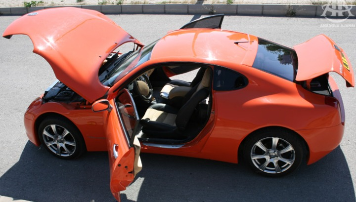
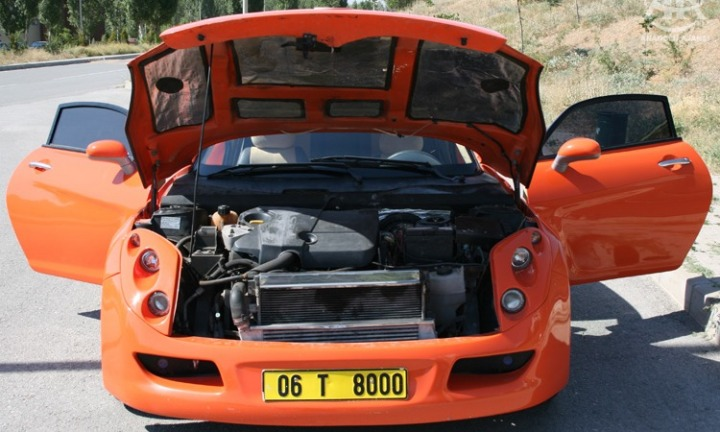
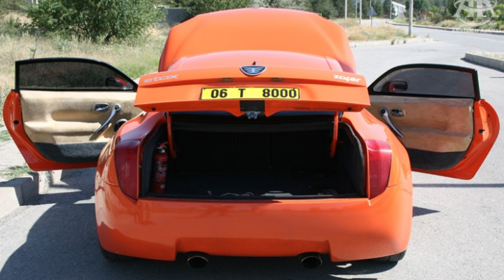

|
''Sipariþ sayýsý 9'a çýktý''
Henüz Etox'un lansmanýnýn yapýlmamýþ olmasýna raðmen 2'si sanatçýlardan olmak üzere 9 sipariþ aldýklarýný belirten Malkoç, bu sipariþleri yýl sonuna kadar teslim edeceklerini bildirdi. Bu sanatçýlardan birinin Murat Göðebakan olduðunu belirten Malkoç, diðer sanatçýnýn henüz isminin açýklanmasýný istemediðini ifade etti.
Daha önce yýlda 500 araç üretme hedefine en erken 2010 yýlýnda ulaþmayý planladýklarýný, ancak gelen olumlu tepkiler ve taleplerin 2008 yýlýnda bu hedefi yakalayacaklarýný gösterdiðini belirten Malkoç, Etox'a daha geniþ kitledeki insanlarýn sahip olabilmesi için fiyatýný 75-85 bin YTL'ye indirdiklerini bildirdi.
Gelecek yýl kendi motorlarýný da üretmeyi planladýklarýný ifade eden Malkoç, Etox'un bir kaç yýl içerisinde motor dahil her þeyiyle Türk malý bir otomobil olarak üretileceðini belirtti.
Bu segmentte hiçbir rakiplerinin olmadýðýný savunan Malkoç, ''Çünkü biz hem yerli, hem spor, hem de dizel bir araba yapýyoruz. Bu özelliklere sahip baþka bir araba üretilmiyor. O yüzden birazda espri olsun diye tek rakibimiz Türk Hava Yollarý diyoruz'' diye konuþtu.

''Fenerbahçe'ye teklif götürdük''
Ercan Malkoç, Fenerbahçe Spor Kulübü'ne özel Etox üretmek üzere teklif götürdüklerini belirterek, þunlarý kaydetti:
''Fenerbahçe'ye, Feneriumlarda satýlmak üzere 5-6 tane özel Etox üretmek konusunda teklif götürdük. Sayýn Nihat Özdemir'le görüþmelerimiz devam ediyor. Her kulübün kendine özel anahtarlýk, telefon, saat gibi ürünleri var. Ancak Real Madrid, Milan gibi büyük kulüpler de dahil olmak üzere dünyada hiç bir spor kulübünün adýný taþýyan kendisine özel bir otomobili yok. Eðer anlaþýrsak, bu dünyada bir ilk olacak. Dünyada kendisine özel, kendi adýný taþýyan otomobil üretilen ilk kulüp Fenerbahçe olacak.''
Malkoç, talep gelmesi halinde Galatasaray, Beþiktaþ, Trabzonspor ve diðer kulüpler içinde üretim yapabileceklerini kaydetti.
Eski Milli futbolcu Rýdvan Dilmen'le reklam konusunda anlaþtýklarýný bildiren Malkoç, reklam teklifi götürdüklerinde Dilmen'in ''En hýzlý Türk futbolcularýndan biri bendim. En hýzlý Türk arabasýnýn reklamýnda da seve seve oynarým'' dediðini ve bunu bir milli görev gibi algýladýðýný ifade ettiðini söyledi.
Malkoç, herhangi bir aksilik olmazsa Kasým ayýnda yayýnlanmaya baþlayacak reklamlarda Türkiye'nin sembollerinden olan Anýtkabir, Boðaz Köprüsü, Çanakkale Þehitliði gibi mekanlarýn yer almasýný planladýklarýný kaydetti.
Malkoç, Etox'un ayrýca çok izlenen gündemdeki dizilerin ilerleyen bölümlerinde de kullanýlacaðýný belirtti.
''Ýlk Türk otomobili Devrim'in isim hakkýný aldýk''
Ýlk Türk otomobili ''Devrim''in bundan 40 yýl önce geliþtirilmesine raðmen üretilmemesine her zaman içerlediðini ifade eden Malkoç, ilk Türk otomobili ''Devrim''in ismini yaþatmak için Etox'un bundan sonraki modelleri düþünülerek, ''Devrim''in isim hakkýný aldýklarýný belirtti. Malkoç, ''Devrim''in yaný sýra ''Cumhuriyet'', ''Bor'', ''Ceylan'' gibi Türkiye'yle özdeþleþen isimleri de tescil ettirdiklerini belirtti.

''Ýlk baþladýðýmda 'bu iþ tutmaz' dediler''
Oto dekorasyon iþini Türkiye'de yapan ilk kiþinin kendisi olduðunu ifade eden Malkoç, 1990 yýlýnda bu iþe baþladýðýný belirtti. Ýlk çocuðu doðduðunda Hyundai bir minibüs aldýðýný ve çocuðunun rahat edebilmesi için yabancý dekorasyon dergilerine bakarak minibüsü dekore ettiðini anlatan Malkoç, daha sonra minibüsü görenlerden gelen talepler üzerine oto dekorasyon iþine girmeye karar verdiðini kaydetti.
Malkoç, 1990'da firmayý kurduðunda herkesin ''Türkiye'de bu iþin tanýnmadýðýný ve dolayýsýyla tutmayacaðýný'' söylediðini belirterek, þunlarý kaydetti:
''Oto Dekorasyon iþine baþladýðýmda küçücük bir dükkanda 4 kiþi çalýþýyorduk. Þu an geldiðimiz noktada Ýstanbul, Ankara, Konya, Antalya, Trabzon ve Almanya'da toplam 8 þubemiz var. Bu þubelerimizde 180 kiþi çalýþýyor. Bizim baþlattýðýmýz iþ bir sektöre haline geldi. 12 bin kiþi bu sektörden ekmek yiyor. Þimdi Etox'u üretme fikrimi çevremle ilk paylaþtýðýmda 'Sen delisin. Bu iþ tutmaz. Büyükler bu pastayý sana yedirmezler' denildi. Ancak oto dekorasyonda geldiðimiz nokta ortada. Yerli otomobil üretmede de çok iyi bir noktaya geleceðimizden þüphem yok. Biz Türkiye'nin yerli bir otomobili olsun fikrinden yola çýkarak Etox'u ürettik. Bu nedenle herkesin Etox'a destek vermesi lazým.''
Malkoç, þu anda Ýstanbul yolunda bulunan þubelerinin altýndaki 2 bin metre karelik alanda Etox'un üretimini yaptýklarýný belirterek, özellikle belediye baþkanlarýndan kendilerine üretim tesisi kurabilecekleri bir alan göstermeleri konusunda destek istedi.
Etox'un Ýstanbul'daki tanýtýmýna, Osman Sýnav, Oktay Kaynarca, Rýdvan Dilmen, Murat Göðebakan'ýn da aralarýnda bulunduðu birçok ünlü isim katýlacak.

Kaynaklar:
|